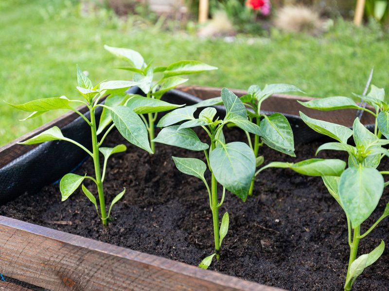
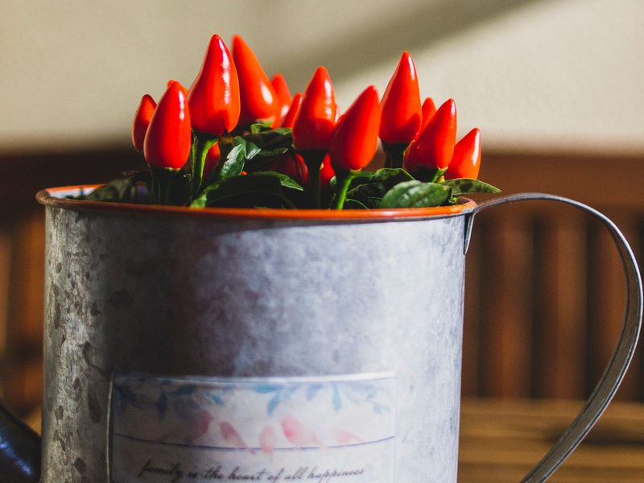

Aussaat
Januar bis März: Saatgut, Anzuchterde, Saattiefe
Chilis selbst anzubauen ist einfacher, als viele denken. Vor allem braucht es Geduld: Von der Aussaat bis zur ersten reifen Schote vergehen je nach Sorte sechs bis neun Monate. Besonders scharfe Sorten wie Habanero lassen sich dabei am meisten Zeit. Wer früh im Jahr startet, kann sich im Sommer über eine reiche Ernte freuen.
Einen Garten brauchst du dafür nicht. Ein heller Platz am Fenster für die Anzucht und später ein sonniger Balkon oder ein Beet reichen völlig aus. Damit deine Pflanzen kräftig wachsen und viele Schoten tragen, kommt es aber auf das richtige Timing und die passende Pflege an.
Auf dieser Seite begleite ich dich durch das Chili-Jahr: Zuerst findest du die einzelnen Phasen vom Samen bis zur Überwinterung in der richtigen Reihenfolge. Danach erfährst du, worauf du bei Licht, Wasser und Dünger die ganze Saison über achten solltest. Zum Schluss zeigt dir eine Monatsübersicht, welche Arbeiten wann anstehen.
Januar bis März: Saatgut, Anzuchterde, Saattiefe

Ein bis vier Wochen: Wärme, Feuchtigkeit, Keimblätter

März bis Mai: Einzeltöpfe, später größere Töpfe

Ab Mitte Mai: Abhärten, Balkon oder Beet

Juni bis August: Bestäubung, Ausgeizen, Stützen

Oktober bis Februar: Rückschnitt, hell und kühl
Wenn die ersten Schoten reif sind, geht es mit der Ernte und Verarbeitung weiter.
| Monat | Aussaat | Umtopfen | Auspflanzen | Düngen | Ernte | Überwintern |
|---|---|---|---|---|---|---|
| Januar | ja | ja | ||||
| Februar | ja | ja | ||||
| März | ja | ja | ||||
| April | ja | |||||
| Mai | ja | ja | ja | |||
| Juni | ja | ja | ||||
| Juli | ja | ja | ||||
| August | ja | ja | ||||
| September | ja | ja | ||||
| Oktober | ja | ja | ||||
| November | ja | |||||
| Dezember | ja |